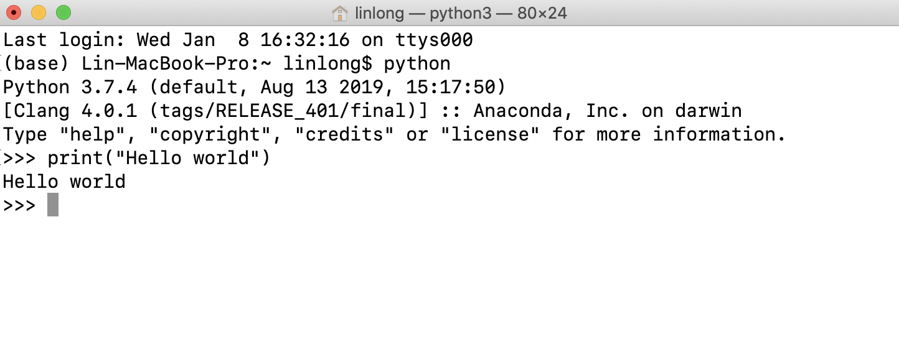
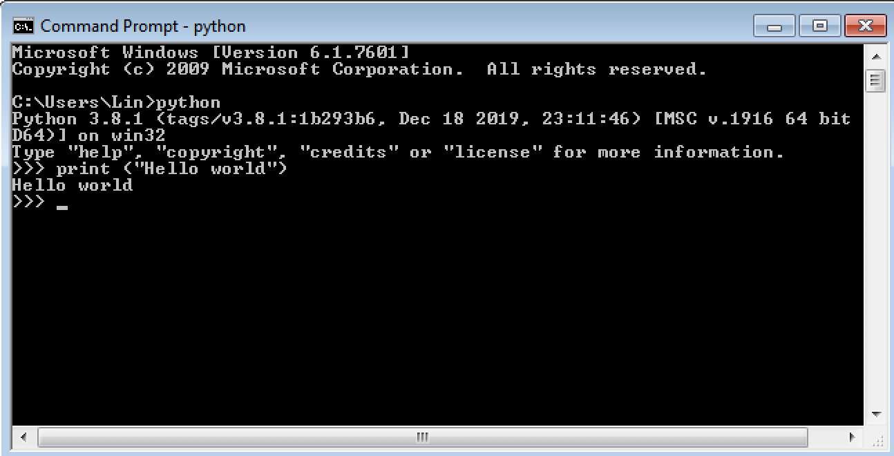
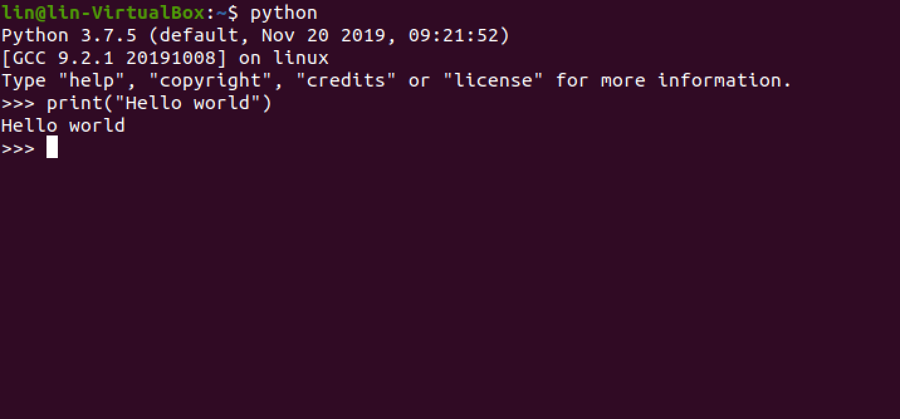

Python is a high-level programming language that is widely used for software and web development, scripting, data analytics, reasearch, and scientific programming. To download and install the latest version of Python onto your computer, please follow the steps below for your respective operating system.
Download Python from the from the Python website & Install it in your machine.
After the installation is finished, open the Terminal application of macOS. You can press Command + Space Bar, this will open up the Spotlight Search Bar and you will then type the word terminal and press enter/return when the application pops up. You can also go to Application → Utilities and search for the terminal. A bash terminal will open where you can enter commands and do cool things in your computer.
Once you have it opened, let’s proceed with the basics. Enter the following command in the terminal, and then press enter/return:
pwd
You should now see the working directory or main folder where everything that exists within your username will come up. Next, type the command below and press enter/return:
python3
You should see the Python version you have installed (i.e. 3.x), and you can now run Python code using your terminal. Print “Hello world” using the print command. Type print("Hello World!")

You can type exit() in your terminal to exit out of Python and then close the terminal window.
If an older version of python already exists in your computer, you can change the alias of the python command in your bash terminal to refer to the python 3.x version you just installed.
To do this, you will need to follow the following steps in your terminal.
terminal, and then press enter/return.nano ~/.bash_profilealias python="python3"
Control + o and then press enter/returnControl + x to exit nanoIf you close that terminal and then open a new one, you can now use the “python” command and it should invoke the latest version of python3.
Download Python from the from the Python website & Install it in your machine.
You can use the Command Prompt in Windows to invoke Python. Go to the start menu and open the Command Prompt application. Type python in the command prompt to confirm that it was installed correctly. Then try entering the command to print(“Hello World!”) to run your first line of code.

Python comes pre-installed in most Linux machines so we will first be checking for the version we have, if any, and then updating it to the latest stable release.
To see which version of Python is installed, open a terminal and run:
python3 --version
If you are using Ubuntu 18.10 or newer, then you can easily install the latest version of Python 3 with the following commands:
sudo apt-get update
sudo apt-get install python3
The latest version of Python language should now be installed on your Linux system, and you can confirm it by running the previous command again:
python3 --version
Other Linux systems may also have Python pre-installed. You can update to the latest version using your Linux distribution’s package manager. On Fedora, use the command:
$ sudo dnf install python3
Open a command prompt or shell and run the following command to verify that Python was installed correctly.
$ python3 --version
Python 3.7.5
You can set python3 as the default Python of your Linux system, so that whenever you enter “python” anywhere in the terminal it always executes python3. Open the terminal and type the following command
vim ~/.bash_profile
Press the letter i and then add the following command in a new line.
alias python="python3"
Then you will press the Escape buttom in your keyboard, the type :wq and then press Enter. Close and restart your Terminal, and now, any code executed in your terminal will automatically use python3 as the default version.
Type python in your terminal and then print(“Hello world”).
